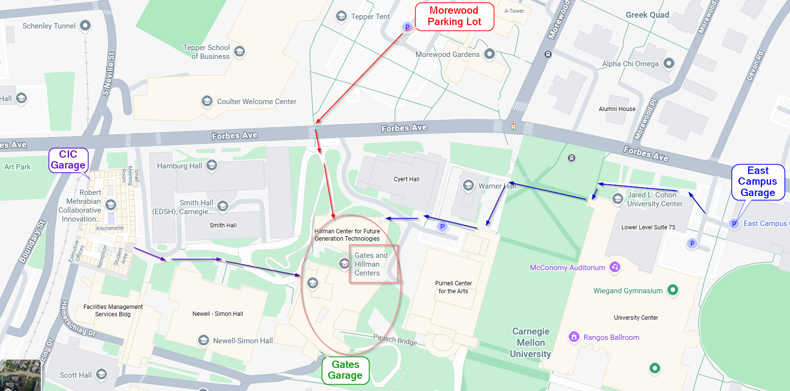

March 23, 2026 · Rm 6115, Gates and Hillman Centers, Carnegie Mellon University, 4902 Forbes Ave, Pittsburgh
The Catalyst Lab is delighted to invite you to the CMU Catalyst Research Summit, which will take place on March 23 on the CMU campus in Pittsburgh. At the summit, the lab will showcase its ongoing research on agentic systems, ML compilers, and multimodal AI systems. The program will bring together Catalyst faculty, students, and collaborators working on core systems and infrastructure challenges in modern AI. It will feature research talks highlighting frontier work from Catalyst, along with panel discussions and poster sessions designed to foster in-depth interaction with faculty and students. The Catalyst Lab will also share the roadmap for several of its ongoing open-source projects.
| Time | Event |
|---|---|
| 8:30 AM – 9:30 AM | Breakfast |
| 9:30 AM – 11:00 AM | Catalyst Research Keynote |
| 11:00 AM – 11:30 AM | Coffee Break |
| 11:30 AM – 12:30 PM |
Catalyst Project Presentations (15 min per talk)
|
| 12:30 PM – 2:00 PM | Lunch Break |
| 2:00 PM – 3:30 PM |
Catalyst Project Presentations (15 min per talk)
|
| 3:30 PM – 4:00 PM | Coffee Break |
| 4:00 PM – 4:30 PM | Invited Lightning Talks (5 min per team) |
| 4:30 PM – 5:30 PM |
Panel Discussion: Co-Evolving Intelligence: MLSys × AI Agents in the Post-AGI Era (Moderator: Prof. Beidi Chen)
|
| 5:30 PM – 8:00 PM | Poster Session with Reception — NSH Atrium |
Gates Hillman Building address: 4902 Forbes Ave, Pittsburgh, PA 15213
For parking garage options please visit CMU Visitor Parking. This will have rates and locations of the parking garages.
